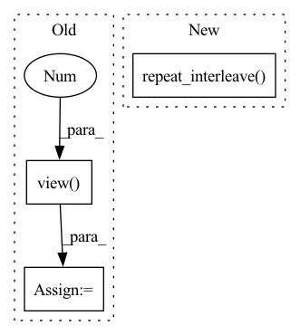

Pattern ID :4886
Before Change
self.bas_coords = self.atom_coords.repeat_interleave(
self.nshells, dim=0)
xyz = (pos.view(-1 , self.nelec, 1, self.ndim) -
self.bas_coords[None, ...])
r = torch.sqrt((xyz*xyz).sum(3))After Change
// repeat/interleave to get vector and distance between
// electrons and orbitals
return (xyz.repeat_interleave(self.nshells, dim=2),
r.repeat_interleave( self.nshells, dim=2) )
def _elec_atom_dist(self, pos):
Computes the positions/distance bewteen elec/atomsIn pattern: SUPERPATTERN
Frequency: 3
Non-data size: 3
Instances Fragment ID: 17262773
Project Name: nlesc-jcer/qmctorch
Commit Name: 65fb82f821eefb1109bf77bfe4950259ef0fa0ea
Time: 2021-04-14
Author: nicolas.gm.renaud@gmail.com
File Name: qmctorch/wavefunction/orbitals/atomic_orbitals.py
M Class Name: AtomicOrbitals
N Class Name: AtomicOrbitals
M Method Name: _process_position(2)
N Method Name: _process_position(2)
M Parent Class: nn.Module
N Parent Class: nn.Module
M File Name: qmctorch/wavefunction/orbitals/atomic_orbitals.py
N File Name: qmctorch/wavefunction/orbitals/atomic_orbitals.py
M Start Line: 402
M End Line: 410
N Start Line: 403
N End Line: 408
Before Change
batch = torch.zeros((batch_size, n_points), device=pos.device, dtype=torch.long)
for i in range(batch_size):
batch[i] = i
batch = batch.view(-1 )
batch = batch[mask]
x1 = (features, pos, batch)
x2 = self.set_conv_1(x1)After Change
pos = pos[mask, :]
batch = torch.arange(batch_size)
batch = batch.repeat_interleave( n_points)
batch = batch[mask]
x1 = (features, pos, batch)
x2 = self.set_conv_1(x1) Fragment ID: 17262764
Project Name: jabb0/fastflow3d
Commit Name: 898a6cd5daa7a378fc09edeea98d76c08a73c30c
Time: 2021-07-03
Author: aron.distelzweig@hotmail.com
File Name: networks/flownet3d/pointFeatureNet.py
M Class Name: PointFeatureNet
N Class Name: PointFeatureNet
M Method Name: forward(3)
N Method Name: forward(3)
M Parent Class: torch.nn.Module
N Parent Class: torch.nn.Module
M File Name: networks/flownet3d/pointFeatureNet.py
N File Name: networks/flownet3d/pointFeatureNet.py
M Start Line: 44
M End Line: 47
N Start Line: 42
N End Line: 43
Before Change
user = self.user_fc_layers(user)
item = self.item_fc_layers(item)
vector = torch.cosine_similarity(user, item).view(-1 )
vector = torch.max(vector, torch.tensor([self.min_y_hat]).to(self.device))
return vector
def calculate_loss(self, interaction):After Change
// Following lines construct tensor of shape [B,n_users] using the tensor of shape [B,H]
col_indices = self.history_user_id[item].flatten()
row_indices = torch.arange(item.shape[0]).to(self.device).repeat_interleave( self.history_user_id.shape[1], dim=0)
matrix_01 = torch.zeros(1).to(self.device).repeat(item.shape[0], self.n_users)
matrix_01.index_put_((row_indices, col_indices), self.history_user_value[item].flatten())
item = self.item_linear(matrix_01)
Fragment ID: 17262762
Project Name: rucaibox/recbole
Commit Name: a63051c31f6cacc489710809995b2610a52b96d6
Time: 2020-09-17
Author: 893833413@qq.com
File Name: recbox/model/general_recommender/dmf.py
M Class Name: DMF
N Class Name: DMF
M Method Name: forward(3)
N Method Name: forward(3)
M Parent Class: GeneralRecommender
N Parent Class: GeneralRecommender
M File Name: recbox/model/general_recommender/dmf.py
N File Name: recbox/model/general_recommender/dmf.py
M Start Line: 73
M End Line: 82
N Start Line: 90
N End Line: 106